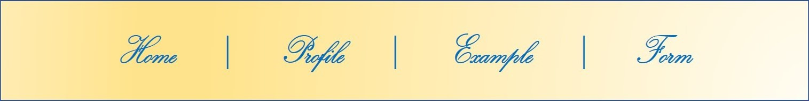

◎ List ◎
Day 1
Day 2
Day 3
Day 4
Day 5
Day 6
Day 7
Day 8
Day 9
Day 10
Day 11
Day 12
Day 13
Day 1
텍스트를 덩어리로 묶어 주는 태그
<hn>태그 - 제목 표시하기
- 기본형: <hn> 제목 </hn>
<p>태그 - 단락 만들기
- 기본형: <p>텍스트 </p>
<br>태그 - 줄 바꾸기
- 기본형: <br>
<hr>태그 - 분위기 전환을 위한 수평 줄 넣기
- 기본형: <hr>
<blockquote>태그 - 인용문 넣기
- 기본형: <blockquote>인용 내용 </blockquote>
<pre>태그 - 입력하는 그대로 화면에 표시하기
- 기본형: <pre>텍스트</pre>
텍스트를 한 줄로 표시하는 태그
<strong>태그, <b>태그 - 굵게 표시하기
- 기본형: <strong>굵게 강조할 텍스트</strong>
- 기본형: <b>굵게 표시할 텍스트</b>
<em>태그, <i>태그 - 이탤릭체로 표시하기
- 기본형: <i>이탤릭체로 표시할 텍스트</i>
- 기본형: <em>이탤릭체로 강조할 텍스트</em>
<mark>태그 - 형광펜 효과내기
- 기본형: <mark>텍스트</mark>
<span>태그 - 줄바꿈 없이 영역 묶기
- 기본형: <span>내용</span>
<ruby>태그 - 동아시아 글자 표시하기
- 기본형: <ruby>내용<rt>주석</rt></ruby>
목록을 만드는 태그
<ul>태그, <li>태그 - 순서 없는 목록 만들기
- 기본형: <ul>
<li>내용</li>
<li>내용</li>
...
</ul>
<ol>태그, <li>태그 - 순서 목록 만들기
- 기본형: <ol>
<li>내용</li>
<li>내용</li>
...
</ol>
<dl>, <dt>, <dd>태그 - 설명 목록 만들기
- 기본형: <dl>
<dt>제목</dt>
<dd>설명</dd>
...
</dl>
표를 만드는 태그
<table>, <tr>, <td>, <th>태그 - 기본적인 표 만들기
- 기본형: <table>
<tr>
<td>내용</td>
<td>내용</td>
...
</tr>
</table>
<caption>태그, <figcaption>태그 - 표에 제목 붙이기
- 기본형: <caption>표 제목</caption>
(ex) 자기소개 표